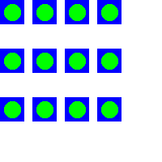

SetOrigin()
Syntax
SetOrigin(x, y)Description
Set an offset at which all drawing in the current output takes place. This defines the location of the coordinates (0, 0) within the output for every following drawing command. By default, the origin is located in the upper left corner of the drawing output.
Parameters
x, y The new position of the drawing origin. This is an absolute location and is not affected by any previous call to this function.
Return value
None.
Remarks
This command affects the location of all future drawing commands with the exception of the ClipOutput() command and the SetOrigin() command itself. Also, the coordinates received in a CustomGradient() or CustomFilterCallback() callback are always absolute regardless of any calls to this function.
Example
If OpenWindow(0, 0, 0, 200, 200, "2DDrawing Example", #PB_Window_SystemMenu | #PB_Window_ScreenCentered) If CreateImage(0, 200, 200, 24, $FFFFFF) And StartDrawing(ImageOutput(0)) ; Draw the same figure at different locations by moving the drawing origin For x = 0 To 120 Step 40 For y = 0 To 120 Step 60 SetOrigin(x, y) Box(0, 0, 30, 30, $FF0000) Circle(15, 15, 10, $00FF00) Next y Next x StopDrawing() ImageGadget(0, 0, 0, 200, 200, ImageID(0)) EndIf Repeat Event = WaitWindowEvent() Until Event = #PB_Event_CloseWindow EndIf

See Also
GetOriginX(), GetOriginY(), ClipOutput()
Supported OS
All